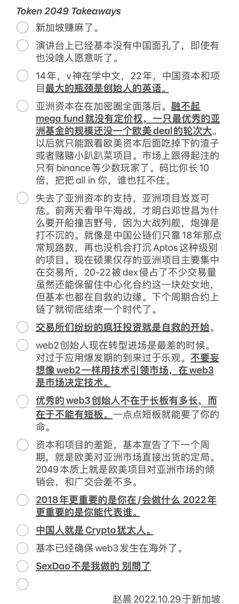

最近几天新加坡在我视野里出现的有点频繁。
我开始写这篇文章的时刻，滨海湾赛道的五盏红灯刚刚亮起，世界一级方程式锦标赛2022赛季新加坡大奖赛正式开始。
而几天前，加密活动Token2049在新加坡分会场举办了今年的活动。
虽然加密市场最近熊的厉害，但Token2049人气还是异常火爆的，官方自称有超过7000位参会者和250个以上的参展商，另一个侧面的证据是据说在九月二十八号到二十九号的会议期间，住宿已经涨到了4000块一天。
今年的Token2049会场传出了一篇小作文，是赵晨在9月29号写的，措辞很尖锐、态度很清晰、论点很激进但论据很模糊，属于那类典型的扔到沙漠无人区都会引发两只蜥蜴的反驳欲的文章。内容如下——
写成这样也叫小作文（？）
这篇文章发出来以后，我看到了大量从各个角度进行的反驳，和不少由此引发出的讨论，事情也过去好几天了，我无意在自己的公众号上再浪费一次时间重复大家的观点，我要说的是一个由此引发的讨论——如何在Crypto圈子存在民族主义的现状下，让中国加密工作者融入Crypto圈子。
这是个很有现实意义的问题，但还存在一个前提性的小问题，为什么要融入呢？
我们来看一下逻辑，融入Crypto圈子是一件好事，这个判断往往基于我们默认融入就等于分蛋糕，但是，蛋糕是天然存在的吗？
如果不考虑短期内的做空/做多，不考虑那些注定是昙花一现的项目，从产生实际效益、生产价值的角度来衡量蛋糕大小的话，Crypto行业的行业的大小恰在于，它能为多少实体经济和金融行为提供多少便利，能为全球经济带来多少好处。
因为从本质上说，区块链是一项技术，一项为解决某些困境（比如中心化主体对经济的干预）而服务的技术，以它为基石产生的产业，不同于矿产、土地这些直接的资源，它必须通过服务产生价值，才变成有意义的蛋糕。
所以，现状下民族主义的表现，我认为即使表面看起来是对语言不同、文化背景不同、政治立场或者意识形态区别的排挤，但却不可能指望着靠中国人学好英语、改变文化背景和思维习惯等等来解决，因为只要区块链依然没有为中国市场服务，在这块的蛋糕就是零，中国人进去就是在硬分别人的蛋糕，肯定是要被排挤的。
进一步说，也许比让中国人融入Crypto圈子更合理的思考方向是，在合规的前提下让Crypto融入中国经济的现实诉求，如果合规的唯一可能只是联盟链或者私链，那就做好联盟链和私链，但公链有没有别的开发方向，有没有能合规的方向呢？
或者从更本质的角度上说，有没有能符合中国经济现实的开发方向呢，毕竟如果真的能带来实际的好处，合规的规就有可能因此而松动。
我觉得这也是值得想象一下的。
我写到这里，墨西哥车手塞尔吉奥·佩雷兹正登上领奖台。